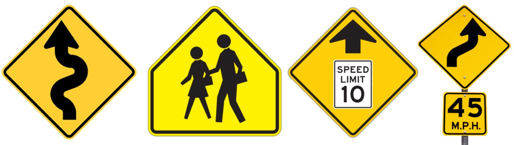
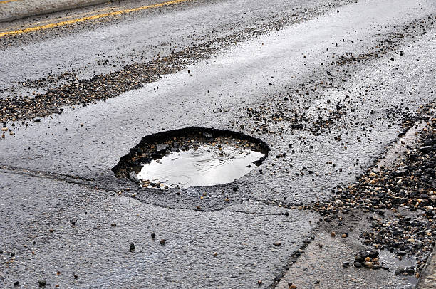
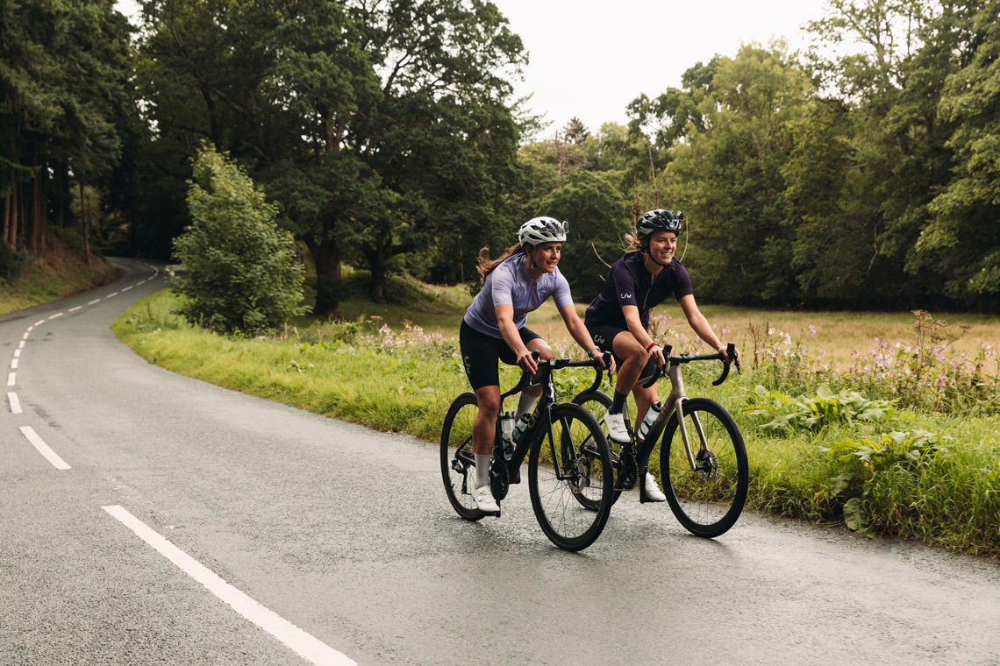

In the United States, different colored signs indicate different information. It's important to know which signs convey which information.
Red Signs
Regulatory signs, normally must be responded to immediately. Usually indicates stopping or prohibited actions.
Orange Signs
placeholder for orange signs
Temporary signs usually found around construction zones. May indicate a detour in the event of a road closure, or warn of a flagger ahead.
Yellow Signs
Most commonly warnings of road conditions. This includes sharp turns that may require the driver to slow down, pedestrian crossings, upcoming traffic signals, and more.

White signs
Display traffic regulations and other information. Most commonly displays speed limits and where or when you can turn. Very similar topics to red signs.
green signs
Gives directional information such as highway exits and entrances, street names, mile markers, and upcoming cities and interstates.
blue signs
Displays services. Directs towards nearby gas stations, parking, rest areas, and handicap parking.
You may encounter many unique hazards on the road, and while some are unavoidable, it's helpful to be familiar with some common ones and learn how to handle them.
Potholes
although fairly harmless when compared to other potential dangers, it is still important to be aware of potholes and avoid them if possible. Driving over a pothole causes significant wear on the car's suspension, and in extreme cases, deep potholes could hit and damage parts of the underside of a car or break vital parts of the suspension with repeated wear.

Puddles
Also pretty harmless, but should not go completely unnoticed. Hydroplaning can happen with bigger puddles, so it's important to pay attension and avoid losing control.
Tire blowout debris
Coming across debris from a blown out tire is not uncommon, especially on highways. Avoid it if possible, as it could damage your car.
Wildlife
Depending on your location, you may encounter different animals near or on the road. When encountering an animal on the road, slow down if possible. While larger animals like deer are more dangerous and more commonly hit, it's important to be aware of smaller animals such as squirrels, rabbits, and raccoons as well.
Bikers
Although there are an abundance of roads and trails designed specifically for bikes, some bikers still like to ride on roads designed for cars. If you don't like driving 20+ miles under the speed limit, you can try to pass them, but many certain don't try and make your life easier, so good luck.

Curbs
Probably shoudln't hit these
children
Probably shouldn't hit these either